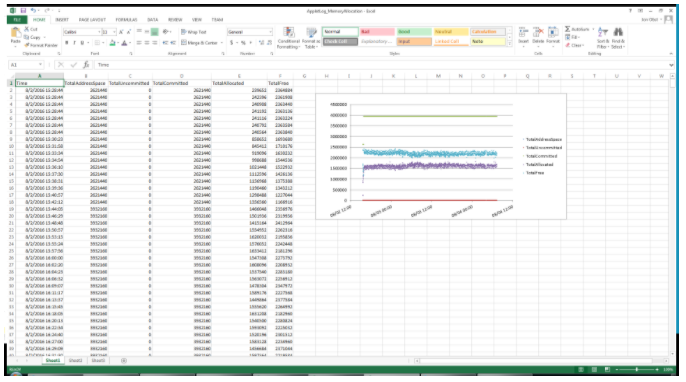

Summary: Explains metrics logged by FSAA to track memory allocation over the course of a scan
Issue: In situations where processes appear to be taking up a significant amount of space in RAM, it's sometimes difficult to tell if that's problematic or expected. This KB shows one analysis based on extracted memory allocation log messages and explains terminology for each part of the message logged. In this case study, the customer's file server ran out of paged pool memory during a scan. They wanted reassurance either that it wouldn't happen again, or that we had done our due diligence in understanding the root cause to the best of our ability.
Instructions: PowerShell was used to extract statistics from applet log, which were then manually scrubbed using Find/Replace in a text editor and/or Excel. This could be further automated if necessary. The commands users were as follows:
$log='C:\fsaa_appletLog.txt'
select-string -path $log -pattern "TotalAddressSpace" | select line | export-csv C:\fsaa_stats.tsv -delimiter "`t" -NoTypeInformation
The following screen shot of excel shows the details of the memory usages by the StealthAUDIT process with a graph.

The Excel file is located here: \\sbitsinc.com\public\Escalation\KB Attachments\Explanation-of-Memory-Stats-in-FSAA-Applet-Logs\AppletLog_MemoryAllocation.xlsx
The key part to notes of the analysis which is two-fold:
- Our process seems to use relatively the same amount of RAM from the time it ramps up until the time that logging ended (as a result of the scan finishing or or the system going down due to insufficient paged-pool memory.
- The amount of RAM it was using was under what was allocated to it as it shows free memory in the TotalFree column.
Column details:
TotalAddressSpace: Most amount of memory, in bytes, the 32 bit process can take up
TotalCommitted: The operating system guarantees that the corresponding pages for the number of bytes listed could in principle exist either in physical RAM or on the page file. In other words, it counts toward its hard limit of total available pages on the system, and it formally creates pages. That is, it creates pages and pretends that they exist (when in reality they don't exist yet).
TotalUncommitted: Opposite of the committed memory, memory, in bytes, that can't be guaranteed to exist through pre-allocation
TotalAllocated: How much memory, in bytes, is currently being utilized by the process
TotalFree: How much memory, in bytes, is free for the process to use
The first and simplest way to watch for a problem is to watch task manager to see where the ram grows and what processes may be using it. See the attached screen shot of the fields to monitor:
Next, this blog post describes more complex ways of getting to the bottom of where specifically the problem lies which include PerfMon counters:
https://blogs.technet.microsoft.com/markrussinovich/2009/03/10/pushing-the-limits-of-windows-paged-and-nonpaged-pool/
PerfMon counters that you may want to try and setup before we start the process again:
- Pool nonpaged bytes
- Pool paged bytes (virtual size of paged pool - some may be paged out)
- Pool paged resident bytes (physical size of paged pool)
You can get even more granular, as the blog post describes more sophisticated ways to track memory leaks with other utilities, and dump files to obtain sub process level details.
Product: StealthAUDIT
Module: SA - DC - FSAA - Activity;SA - DC - FSAA - DFS;SA - DC - FSAA - Permissions;SA - DC - FSAA - Sensitive Data
Versions: 6.3, 7.0, 7.1, 7.2
Dev Ticket: SAFS-1307
Legacy Article ID: 1313